Show the code
library(astsa)
library(here)
library(knitr)
library(tidyverse)library(astsa)
library(here)
library(knitr)
library(tidyverse)# resolve conflicts with plotly
# conflicted::conflicts_prefer(plotly::layout)
# resolve conflicts with tidymodels packages
# tidymodels::tidymodels_prefer()library(eda4mlr)# stabilize simulated data
source(here("code", "eda4ml_set_seed.R"))
# gen_ds_tbl
# compile a tibble that identifies data sets
source(here("code", "gen_ds_tbl.R"))
# get_ref_materials
# encapsulate reference materials as separate modules
source(here("code", "get_ref_materials.R"))Throughout this book we have seen that understanding and decision support are intertwined—that knowing why a method works is what allows you to recognize when it applies and when it doesn’t. Time series analysis makes this interplay especially vivid.
The standard assumption underlying most statistical methods is that observations are independent: knowing the value of one observation tells you nothing about another. Time series data follow a different structure. Successive observations are dependent: today’s temperature is informative about tomorrow’s; this quarter’s earnings relate to last quarter’s; the sunspot count this month connects to counts in surrounding months.
This dependence is not merely a technical nuisance requiring adjusted formulas. It is information: information about how systems evolve, about underlying periodic structure, about the mechanisms that generate the data we observe. The autocorrelation structure of a time series is a fingerprint of the process that produced it. To ignore this structure is not just to get wrong standard errors—it is to miss what the data are telling us.
The dependence structure of a time series can be characterized in two complementary ways:
Time domain: How does the present relate to the past? The autocorrelation function \(\rho(u)\) measures the correlation between observations separated by \(u\) time units. This perspective emphasizes prediction—using past values to forecast future ones.
Frequency domain: What periodic components are present? The spectral density \(f(\lambda)\) measures how much variance is attributable to oscillations at frequency \(\lambda\). This perspective emphasizes understanding—identifying the rhythms and cycles that structure the process.
These two descriptions contain the same information. They are Fourier transform pairs: the spectrum is the transform of the autocovariance function, and vice versa. Yet they illuminate different aspects of the data. The time-domain view asks how the past predicts the future; the frequency-domain view asks what structure generated this process. Together, they provide a complete picture.
This duality is not accidental. There is a deep mathematical reason why Fourier analysis is fundamental to time series: the complex exponential functions \(e^{i\lambda t}\) are eigenfunctions of the time-shift operator. Any linear, time-invariant system—a moving average, a filter, a physical process that doesn’t change its character over time—has these sinusoidal functions as its natural modes. When we decompose a signal into frequency components, we are working in the natural coordinate system for such systems. We will develop this insight further in the sections that follow.
The two perspectives on time series—time domain and frequency domain—map onto the dual aims of data analysis.
Forecasting is the archetypal decision-support application of time series analysis. Given observations up to the present, what should we expect tomorrow, next quarter, next year? Time-domain methods, particularly ARIMA models, are the workhorses of this enterprise. They exploit the autocorrelation structure to extrapolate patterns into the future.
But effective forecasting rests on understanding. A forecast that merely extrapolates a trend will fail when conditions change. The question “what should we expect?” is inseparable from the question “why does the series behave as it does?” Climate data illustrate this forcefully: projecting future temperatures requires understanding the physical mechanisms—greenhouse gas forcing, feedback loops, natural variability—not merely curve-fitting to historical data. The frequency-domain perspective, which reveals the periodic structure and the filtering that shaped the series, serves this understanding.
The examples in this chapter span this range: sunspots, where periodic structure is primary; global temperatures, where trend and its causes are central; and ocean-atmosphere dynamics, where multiple periodicities interact. In each case, we examine the data from both perspectives, showing how they complement each other.
This chapter introduces the conceptual and diagnostic foundations for time series analysis. We proceed as follows:
Examples: We begin with data—sunspots, global temperatures, the Southern Oscillation—examining each from both time-domain and frequency-domain perspectives. These examples build intuition for what the two views reveal.
The White Noise Baseline: White noise, a sequence of independent observations, serves as the reference point. Its autocorrelation function is zero at all nonzero lags; its spectrum is flat. Departures from this baseline indicate structure—the fingerprint of dependence.
Stationarity and Time-Invariance: We define stationarity, the condition under which the autocovariance and spectrum are well-defined and estimable from a single realization. Stationarity is the statistical counterpart of time-invariance in systems theory—the condition that a system’s behavior does not depend on when we observe it.
Autocorrelation and Partial Autocorrelation: We develop the ACF and PACF as diagnostic tools, showing how their patterns reveal the dependence structure and guide model selection.
Why It Matters for Inference: We demonstrate that ignoring autocorrelation leads to incorrect variance estimates and misleading confidence intervals. The concept of effective sample size quantifies how much less information autocorrelated data contain than independent observations would.
Looking Ahead: We preview the subsequent chapters—time-domain methods (Chapter 13) and frequency-domain methods (Chapter 14)—which develop the modeling and estimation tools sketched here.
Throughout, we maintain the dual perspective: every diagnostic can be viewed in both time and frequency domains, and both views inform our understanding of what the data reveal.
We begin with three examples that illustrate the complementary insights provided by time-domain and frequency-domain analysis. For each, we display the time series itself, then examine what the autocorrelation function (ACF) and the spectrum reveal. The goal is to build intuition: different types of structure appear more clearly in one domain or the other, but both views describe the same underlying reality.
The sunspot record is one of the longest continuous scientific observations, extending from 1749 to the present. Figure 12.1 shows the monthly count of sunspots as recorded by the Royal Observatory of Belgium’s Solar Influences Data Analysis Center.
astsa::tsplot(sunspot.month, ylab = "Sunspot count", col = 4, main = "")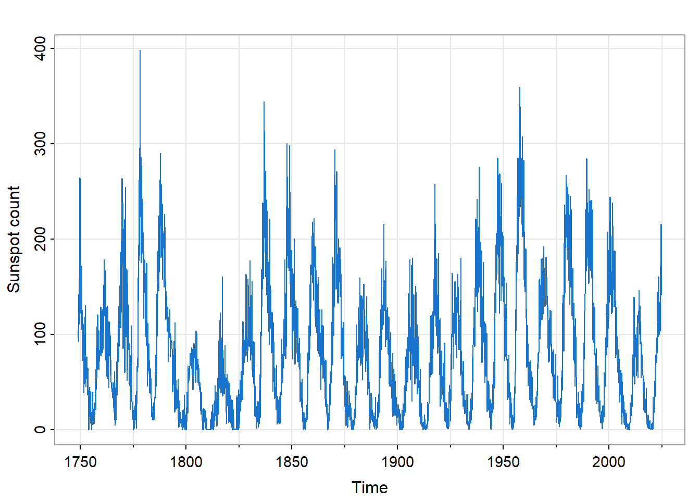
The series displays an obvious cyclical pattern: the approximately 11-year solar magnetic cycle during which sunspot activity rises and falls. But notice also the irregular amplitude: some cycles peak much higher than others. This is not simple periodic behavior; there is structure within the cycles.
Sunspots matter beyond pure science. Solar activity affects space weather, which in turn influences satellite operations, radio communications, and power grid stability. The sunspot record is also a primary input for reconstructing total solar irradiance before the era of direct satellite measurement (pre-1978), relevant to understanding long-term climate variability.
The autocorrelation function reveals how the present relates to the past.
ss_acf <- astsa::acf1(sunspot.month, max.lag = 200, main = "")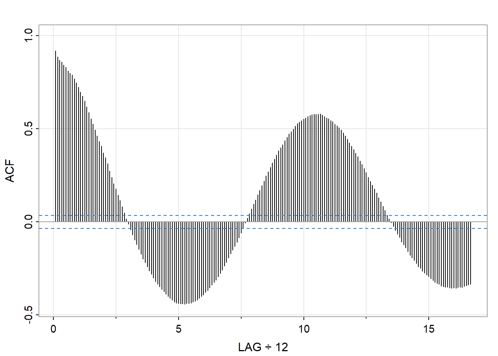
The ACF shows several notable features. First, there is slow decay—values remain substantially correlated even at long lags. This indicates strong persistence: knowing this month’s sunspot count tells you something about counts many months into the future. Second, the ACF oscillates, with peaks appearing roughly every 130 months (about 11 years). This oscillation reflects the solar cycle, but the ACF does not give a precise period: the peaks are broad, and reading the exact cycle length is difficult.
The slow decay also hints at a challenge: this process may not be stationary in the strict sense. The varying amplitude of the cycles suggests that the statistical properties may shift over time. We will return to this issue when we discuss stationarity.
The spectrum reveals what periodic components are present and how much variance each contributes.
astsa::mvspec(sunspot.month, log = "no", main = "", col = 4)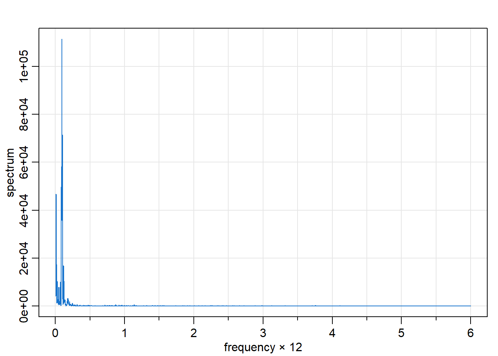
The spectrum tells a clearer story about periodicity. A dominant peak appears at a frequency of approximately 0.007 cycles per month, corresponding to a period of about 140 months or 11.7 years—the solar cycle, precisely located. The spectrum also shows smaller peaks at harmonics of this fundamental frequency, reflecting the non-sinusoidal shape of the solar cycle (sunspot counts rise faster than they fall).
What the ACF revealed only through broad oscillations, the spectrum makes immediately visible: there is a dominant periodic component, and we can read its frequency directly. The frequency-domain view excels at identifying and separating periodicities.
Figure 12.4 shows annual temperature deviations (in °C) from the 1991–2020 average for the Earth’s land surface, recorded from 1850 to 2023. The data are from NOAA’s Global Climate Report.1
astsa::tsplot(gtemp_land, ylab = "°C deviation", col = 4, main = "")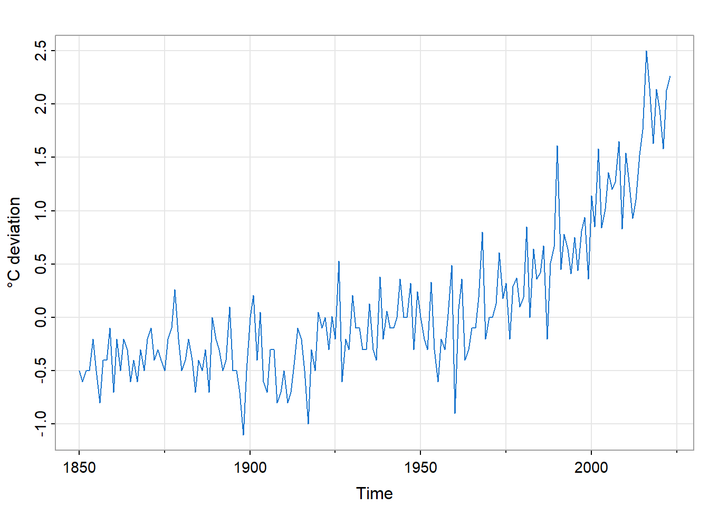
Unlike sunspots, this series shows no obvious periodicity. The dominant feature is a trend: temperatures have risen, particularly since the 1970s. The trend is not linear; there are periods of relative stability followed by accelerations.
This example illustrates the connection between scientific understanding and decision support at its starkest. The trend is the signal that has driven climate policy debates. But extrapolating the trend requires an understanding of its causes: greenhouse gas forcing, feedback mechanisms, natural variability. A purely statistical forecast that ignores the physics would be scientifically indefensible and practically useless for long-term planning.
gtl_acf <- astsa::acf1(gtemp_land, main = "")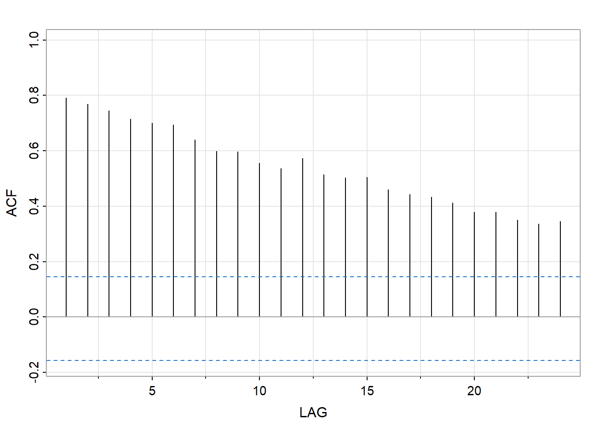
The ACF decays very slowly—each year is strongly correlated with the next, and correlations remain substantial even at lags of 20 or more years. This pattern is the time-domain signature of a trend: when there is a systematic increase over time, nearby observations are similar (from lower values to higher values), producing high autocorrelations.
The slow ACF decay signals non-stationarity. The statistical properties of this series are not constant over time—the mean is changing. Before applying standard time series methods we would need model and remove the trend.
astsa::mvspec(gtemp_land, log = "no", main = "", col = 4)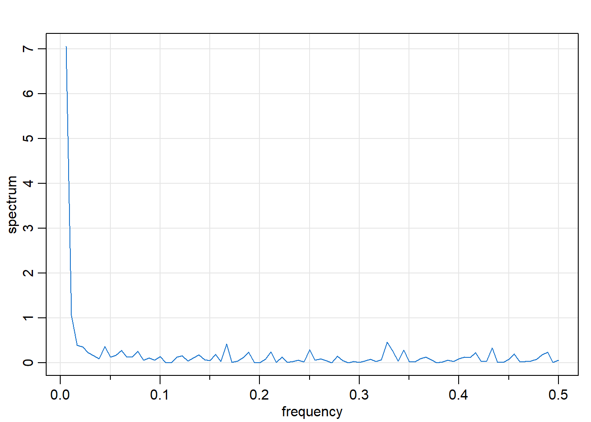
The spectrum is dominated by low frequencies: most of the variance is concentrated near zero frequency. This is the frequency-domain signature of trend: a systematic change over time manifests as power at the lowest frequencies. There are no prominent peaks at higher frequencies; the series lacks the periodic structure we saw in sunspots.
The spectral view reinforces what the ACF suggested: this is a trend-dominated series without significant cyclical components. The story is secular change, not periodic oscillation.
Our third example involves two related series: the Southern Oscillation Index (SOI) and a fish recruitment index. Figure 12.7 shows both series, which span 1950–1987 with monthly observations.
par(mfrow = c(2, 1), mar = c(2, 4, 2, 1))
astsa::tsplot(soi, ylab = "SOI", col = 4, main = "Southern Oscillation Index")
astsa::tsplot(rec, ylab = "Recruitment", col = 4, main = "Fish Recruitment")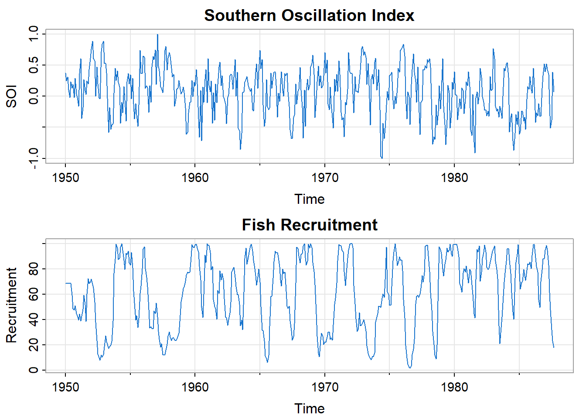
The Southern Oscillation is a periodic fluctuation in sea surface temperature and air pressure across the tropical Pacific. Its warm phase is the well-known El Niño; its cool phase is La Niña. These oscillations affect weather patterns globally and have profound effects on marine ecosystems.
The recruitment index measures the abundance of new fish entering a population, a quantity of direct economic importance to fisheries. Visual inspection suggests the two series are related: both show cyclical behavior with similar timing.
This example sets up a key question that frequency-domain methods can answer: what periodicities are present in each series, and do they match? If SOI and recruitment share common frequencies, that would refine our understanding of potential causal mechanisms linking ocean temperature to fish populations.
par(mfrow = c(1, 2))
soi_acf <- astsa::acf1(soi, main = "ACF")
astsa::mvspec(soi, log = "no", main = "Spectrum", col = 4)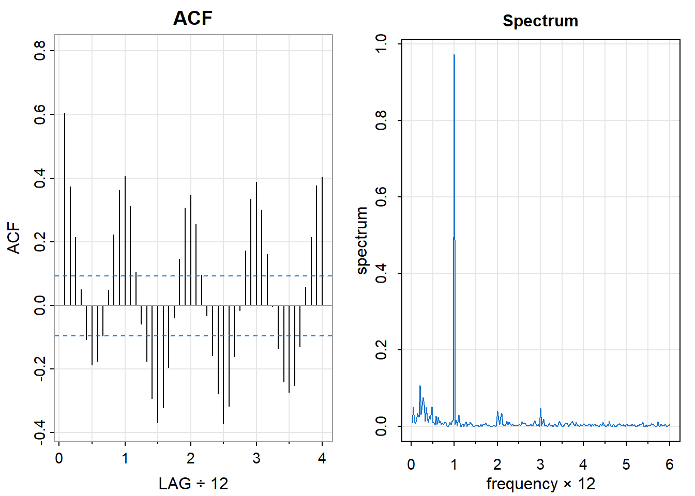
The ACF oscillates, indicating cyclical structure, but which cycles? The oscillations are not perfectly regular, making it hard to read periods from the ACF alone.
The spectrum is more revealing. There are two clear peaks: one near frequency 1 (cycles per year), corresponding to the annual cycle of seasonal temperature variation, and another near frequency 0.25 (about 4 cycles per year), corresponding to the El Niño cycle with a period of approximately 4 years. The frequency domain separates these two periodicities, which the ACF conflates into a single oscillating pattern.
par(mfrow = c(1, 2))
rec_acf <- astsa::acf1(rec, main = "ACF")
astsa::mvspec(rec, log = "no", main = "Spectrum", col = 4)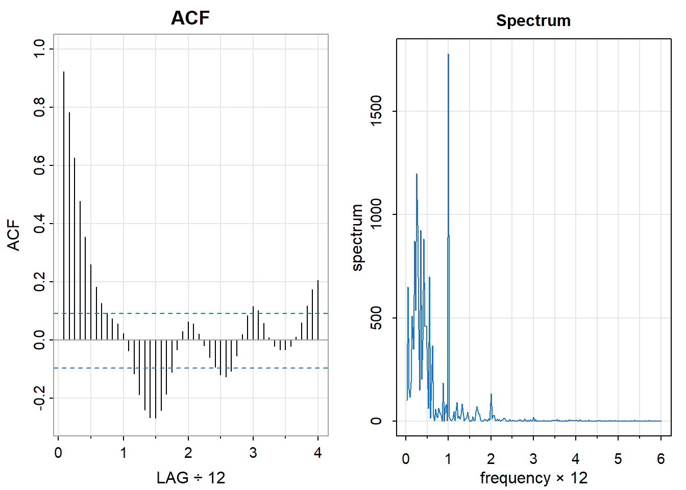
The recruitment series shows a similar spectral pattern: peaks at both the annual frequency and near the El Niño frequency. The correspondence is striking—the fish population responds to the same periodic drivers as the ocean temperature index.
This correspondence is the beginning of a deeper analysis. Chapter 14 develops coherence analysis, which quantifies how closely two series are related at each frequency. Here, the visual similarity of the spectra suggests strong coherence at the El Niño frequency: the ocean oscillation and the fish population fluctuate together.
These three examples illustrate complementary strengths of the two perspectives:
| Series | ACF reveals | Spectrum reveals |
|---|---|---|
| Sunspots | Slow decay, oscillation | Periodicity of ~11 years |
| Global temps | Very slow decay (trend) | Low-frequency dominance |
| SOI/Recruitment | Oscillation | Separate annual and El Niño cycles |
The time domain tells us about persistence and prediction: how much does the past constrain the future? The frequency domain tells us about structure and mechanism: what periodicities are present, and at what strength?
Neither view is complete without the other. Together, they provide the diagnostic foundation for the modeling developed in subsequent chapters.
To recognize structure, we need a reference point—a process with no structure. White noise provides this baseline: a sequence of independent, identically distributed observations. Understanding white noise clarifies what departures from it signify.
A white noise process \(\{W(t)\}\) has the following properties:
The name “white noise” comes from an analogy with light: just as white light contains all visible frequencies in equal proportion, white noise contains all temporal frequencies equally. The term originated in physics and engineering, where noise processes arise naturally in electronic circuits and communication systems.
Independence implies zero correlation between distinct observations:
\[ \rho_W(u) = \text{Corr}(W(t+u), W(t)) = \begin{cases} 1 & \text{if } u = 0 \\ 0 & \text{if } u \neq 0 \end{cases} \]
The autocorrelation function of white noise is zero everywhere except at lag zero, where it equals one (every observation is perfectly correlated with itself). This is the time-domain signature of independence: the past tells you nothing about the future.
The spectrum of white noise is flat—constant across all frequencies:
\[ f_W(\lambda) = \frac{\sigma^2}{2\pi} \quad \text{for all } \lambda \in (-\pi, \pi] \]
A flat spectrum means that no frequency contributes more variance than any other. There are no dominant periodicities, no preferred time scales. This is the frequency-domain signature of independence: no periodic structure whatsoever.
The total variance is obtained by integrating the spectrum:
\[ \text{Var}\{W(t)\} = \int_{-\pi}^{\pi} f_W(\lambda) \, d\lambda = \sigma^2 \]
Figure 12.10 shows a realization of white noise along with its sample ACF and estimated spectrum.
set.seed(42)
wn <- rnorm(500)
par(mfrow = c(1, 3))
astsa::tsplot(wn, main = "White noise", col = 4, ylab = "")
wn_acf <- astsa::acf1(wn, main = "ACF")
wn |> stats::spectrum(
spans = c(15, 15), ci = 0.95, ci.col = "blue", main = "Spectrum" )
# mvspec(wn, spans = c(15, 15), log = "no", main = "Spectrum", col = 4)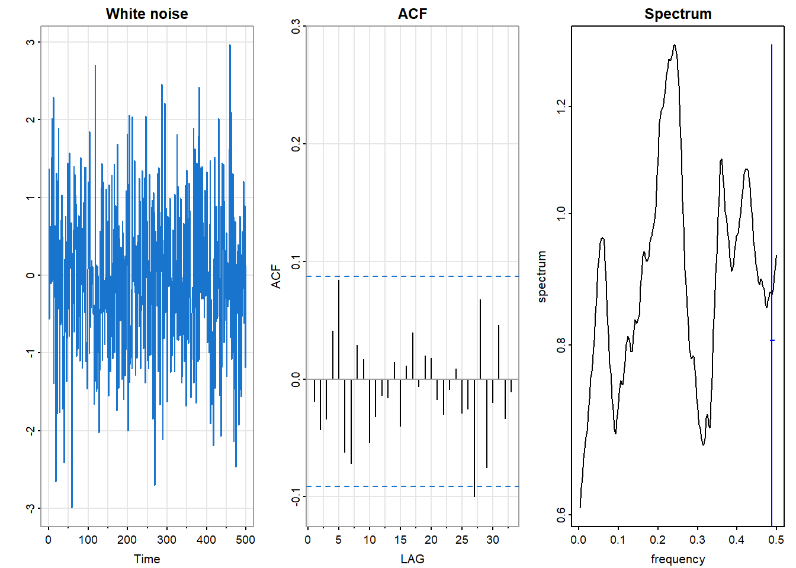
The time series shows no visible pattern—values fluctuate randomly around zero with no apparent persistence or periodicity. The sample ACF hovers near zero at all nonzero lags, with values falling within the blue dashed confidence bands that indicate the range expected under the null hypothesis of white noise. The smoothed spectrum is approximately flat (within confidence bands), with no significant peaks indicating dominant frequencies.
These are the signatures we look for when assessing whether a series (or the residuals from a fitted model) behaves like white noise.
White noise is more than a reference point—it is, in a sense, the raw material from which correlated processes are built. Here is a useful way to think about stationary time series:
In the beginning there was white noise: independent observations, no memory, a flat spectrum.
Then a linear, time-invariant filter acted on the white noise—a weighted average of current and past values, a physical system that smooths or oscillates.
The result is a correlated process: the filter’s fingerprint impressed on the original independence.
This “creation myth” is not merely a metaphor. The Wold decomposition theorem establishes that any stationary process can be represented as a linear combination of current and past white noise values (plus a deterministic component). The coefficients of this representation encode the autocorrelation structure.
From this perspective:
The spectrum of the output tells you how the filter reshaped the flat spectrum of the input. Peaks indicate frequencies that the filter amplified; troughs indicate frequencies that were attenuated.
The ACF of the output tells you how the filter introduced dependence between observations. Slow decay indicates a filter with long memory; oscillations indicate a filter with periodic character.
The two views describe the same filtering—one in terms of frequency response, the other in terms of temporal correlation. They are mathematically equivalent descriptions of what the filter did to the white noise input.
Any structure in the ACF or spectrum indicates departure from independence. The pattern of departure suggests the type of structure present:
| Observation | Time Domain (ACF) | Frequency Domain (Spectrum) |
|---|---|---|
| Persistence or trend | Slow decay | Low-frequency dominance |
| Periodic structure | Oscillation | Peaks at characteristic frequencies |
| Short memory (MA-type) | Sharp cutoff after a few lags | Smooth, broad features |
| Long memory (AR-type) | Gradual exponential decay | Sharp peaks |
These correspondences guide model selection. When we examine the ACF and spectrum of a new series, we are asking: how does this process differ from white noise, and what does that difference tell us about the underlying mechanism?
The examples in the previous section illustrated these patterns. Sunspots showed oscillating ACF and spectral peaks (periodicity). Global temperatures showed slow ACF decay and low-frequency spectral dominance (trend). SOI showed both oscillation and multiple spectral peaks (multiple periodicities). In each case, the departure from the white noise baseline revealed structure that the data contain.
The autocorrelation function and spectrum are well-defined only under certain conditions. Those conditions—collectively called stationarity—turn out to have a deep connection to the concept of time-invariance in systems theory. Understanding this connection illuminates why Fourier methods are fundamental to time series analysis.
A random process \(\{X(t)\}\) is second-order stationary (also called weakly stationary or covariance stationary) if:
The first condition says the expected value does not drift over time. The second says the covariance between two observations depends only on their separation \(u\), not on when they occur. Together, these conditions ensure that the statistical properties of the process do not change with time.
A stronger condition, strict stationarity, requires that the entire joint distribution of any collection of observations depends only on their relative positions, not their absolute times. Second-order stationarity is weaker—it constrains only means and covariances—but is sufficient for most time series methods and is what we mean by “stationarity” unless otherwise specified.
Stationarity is essential for a practical reason: it allows us to estimate the autocovariance function from a single realization.
Consider estimating \(\gamma(u)\), the covariance between observations separated by \(u\) time units. If stationarity holds, then \(\gamma(u)\) is the same whether we look at \((X(1), X(1+u))\) or \((X(100), X(100+u))\) or any other pair separated by \(u\). We can average over all such pairs in our observed series to estimate \(\gamma(u)\).
If stationarity fails—if the covariance structure changes over time—then there is no single \(\gamma(u)\) to estimate. Different parts of the series would give different answers, and averaging them would be meaningless.
The same logic applies to the spectrum. The spectral density \(f(\lambda)\) describes how variance is distributed across frequencies. If the frequency content changes over time—more high-frequency variation in one era, more low-frequency in another—then there is no single spectrum to estimate.
Stationarity thus enables the entire enterprise of characterizing dependence structure. Without it, the ACF and spectrum are not well-defined population quantities.
Stationarity has a deeper significance beyond enabling estimation. It is the statistical counterpart of time-invariance in systems theory.
A linear system is time-invariant if its behavior does not depend on when the input is applied. Mathematically, if input \(X(\cdot)\) produces output \(Y(\cdot)\), and we shift the input in time to get \(X(\cdot - s)\), then the output shifts by the same amount: \(Y(\cdot - s)\). The system treats all time points equivalently.
Stationarity is the probabilistic version of this property. A stationary process is one whose statistical behavior does not depend on the time origin. Shifting the entire process in time does not change its distributional properties.
This connection explains why Fourier analysis is fundamental to both domains:
In systems theory, complex exponentials \(e^{i\lambda t}\) are eigenfunctions of time-invariant linear systems. Any such system, when presented with a sinusoidal input, produces a sinusoidal output at the same frequency (possibly with changed amplitude and phase).
In time series analysis, the spectrum decomposes a stationary process into contributions from different frequencies. This decomposition is natural precisely because stationarity ensures that the frequency content does not change over time.
The mathematical parallel is exact. The back-shift operator \(\mathcal{B}\), which shifts a process one time unit into the past, plays the role of the time-shift operator in systems theory. Stationarity means the process is statistically invariant under \(\mathcal{B}\). And the eigenfunctions of \(\mathcal{B}\)—the complex exponentials—are the building blocks of spectral analysis.
This is why the “two perspectives” of time series analysis—time domain and frequency domain—are not merely alternative techniques. They are dual aspects of a unified mathematical structure, linked by the Fourier transform and grounded in the concept of time-invariance.
Before applying methods that assume stationarity, we should assess whether the assumption is plausible. Visual inspection of the time series plot is the first diagnostic.
par(mfrow = c(1, 2))
set.seed(123)
astsa::tsplot(stats::arima.sim(list(ar = 0.8), n = 200),
main = "Stationary: AR(1)", col = 4, ylab = "")
astsa::tsplot(cumsum(rnorm(200)),
main = "Non-stationary: Random Walk", col = 2, ylab = "")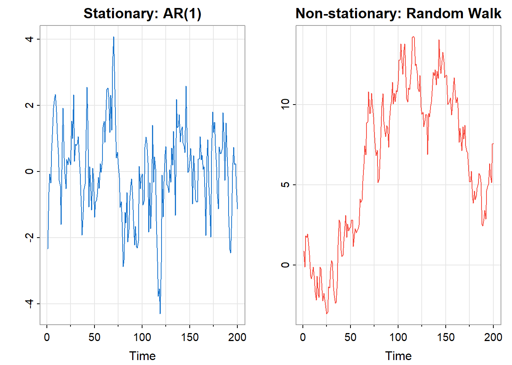
The left panel shows a stationary AR(1) process. It fluctuates around a constant level, repeatedly returning toward the center. High values are followed by regression toward the mean; low values likewise. The process has a stable “home base.”
The right panel shows a random walk—the cumulative sum of independent increments. It wanders without returning, drifting far from its starting point. There is no stable mean to which it regresses. This is the signature of non-stationarity: the process has no fixed level.
Signs suggesting non-stationarity:
The ACF provides additional evidence. A stationary process typically has an ACF that decays to zero reasonably quickly. A non-stationary process often shows an ACF that decays very slowly or not at all—as we saw with the global temperature data.
When a series is non-stationary, we often transform it before analysis. Common transformations include:
Differencing removes trend by computing changes rather than levels: \[ Y(t) = X(t) - X(t-1) = (1 - \mathcal{B})X(t) \]
The differenced series \(Y(t)\) represents the change from one period to the next. If \(X(t)\) has a linear trend, \(Y(t)\) will fluctuate around a constant (the slope), achieving stationarity. Higher-order differencing—differencing the differenced series—can remove polynomial trends.
Seasonal differencing removes periodic patterns by comparing each observation to the same season in the previous cycle: \[ Y(t) = X(t) - X(t-s) \] where \(s\) is the seasonal period (e.g., \(s = 12\) for monthly data with annual seasonality).
Logarithmic transformation stabilizes variance when fluctuations grow proportionally with level. If the standard deviation of \(X(t)\) is proportional to its mean, then \(\log X(t)\) will have approximately constant variance.
Detrending fits and removes a trend model (linear, polynomial, or otherwise), analyzing the residuals.
The appropriate transformation depends on the nature of the non-stationarity. Often, transformations are combined: for example, taking logs to stabilize variance, then differencing to remove trend.
After transformation, we verify that the result appears stationary: stable mean, no obvious trend or changing variance, ACF that decays reasonably. Only then do we proceed with methods that assume stationarity.
Transformations can obscure as well as reveal. Differencing removes trend, but it also removes information—the level of the series is lost. If the scientific question concerns levels rather than changes, differencing may not be appropriate.
More fundamentally, an observed trend may be substantively important, not a nuisance to be removed. The upward trend in global temperatures is the signal, not the noise. Differencing would eliminate it, leaving only year-to-year fluctuations—interesting, but not the main story.
The choice of transformation should be guided by the scientific question. Stationarity is a technical requirement for certain methods, but achieving it mechanically, without regard to meaning, can lead us away from the questions we actually want to answer.
This is another instance of the theme running through this book: technical procedures serve understanding and decision support. They are means, not ends.
The autocorrelation function (ACF) and partial autocorrelation function (PACF) are the primary diagnostic tools for characterizing the dependence structure of a time series. We have already seen them in action in the examples; now we develop them more formally.
For a stationary process \(\{X(t)\}\) with mean \(\mu\) and autocovariance function \(\gamma(u) = \text{Cov}(X(t+u), X(t))\), the autocorrelation function is the normalized autocovariance:
\[ \rho(u) = \frac{\gamma(u)}{\gamma(0)} = \text{Corr}(X(t+u), X(t)) \]
The ACF measures the correlation between observations separated by \(u\) time units. Its properties follow from those of correlation coefficients:
The ACF answers a fundamental question: how predictable is the future from the past? If \(\rho(u)\) is large, observations \(u\) time units apart are strongly related; knowing one tells you much about the other. If \(\rho(u)\) is near zero, the observations are nearly uncorrelated; the past is a poor linear predictor of the future at that lag.
Given observations \(X(1), X(2), \ldots, X(T)\), we estimate the ACF by:
\[ \hat{\rho}(u) = \frac{\hat{\gamma}(u)}{\hat{\gamma}(0)} \]
where the sample autocovariance is:
\[ \hat{\gamma}(u) = \frac{1}{T} \sum_{t=1}^{T-u} (X(t+u) - \bar{X})(X(t) - \bar{X}) \]
The divisor \(T\) (rather than \(T-u\)) is conventional; it ensures that the sample autocovariance matrix is positive semi-definite.
When plotting the sample ACF, we include confidence bands indicating the range of values expected under the null hypothesis that the true process is white noise. Under this null, for large \(T\):
\[ \hat{\rho}(u) \stackrel{\cdot}{\sim} N\left(0, \frac{1}{T}\right) \quad \text{for } u \neq 0 \]
The conventional 95% confidence bands are thus \(\pm 1.96 / \sqrt{T}\), often displayed as dashed lines. Sample ACF values outside these bands suggest statistically significant autocorrelation at that lag.
soi_acf <- astsa::acf1(soi, main = "SOI: Sample ACF")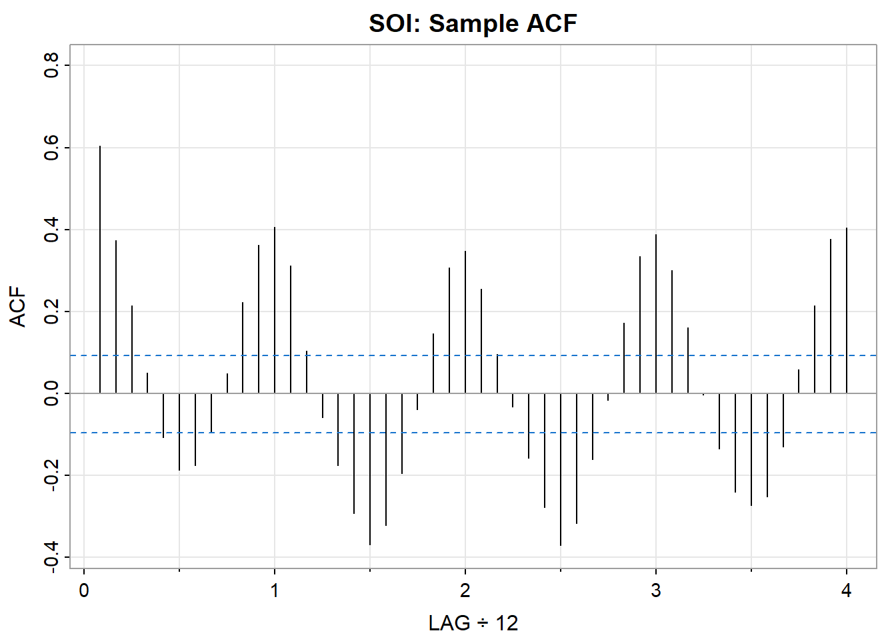
In this plot, the numerous values outside the confidence bands indicate that SOI has substantial autocorrelation—it is far from white noise. The oscillating pattern suggests periodic structure, and the slow decay indicates persistence.
The ACF measures the total correlation between \(X(t+u)\) and \(X(t)\). But some of this correlation may be indirect—mediated through intervening observations \(X(t+1), X(t+2), \ldots, X(t+u-1)\).
The partial autocorrelation function (PACF) measures the direct correlation between \(X(t+u)\) and \(X(t)\), after removing the linear effects of the intervening observations. Formally:
\[ \phi_{uu} = \text{Corr}(X(t+u) - \hat{X}(t+u), \; X(t) - \hat{X}(t)) \]
where \(\hat{X}(t+u)\) and \(\hat{X}(t)\) are the best linear predictions of \(X(t+u)\) and \(X(t)\) from the intervening values \(\{X(t+1), \ldots, X(t+u-1)\}\).
The PACF answers a different question: what is the direct effect of lag \(u\), controlling for shorter lags? This distinction matters for model identification:
In an AR(p) process, \(X(t)\) depends directly on \(X(t-1), \ldots, X(t-p)\) but not on earlier values. The PACF will be nonzero for lags \(1, \ldots, p\) and zero thereafter—it “cuts off” after lag \(p\).
In an MA(q) process, the dependence structure is different: the ACF cuts off after lag \(q\), while the PACF decays gradually.
Plotting the ACF and PACF together provides a diagnostic fingerprint of the dependence structure.
soi_acf2 <- astsa::acf2(soi, main = "Southern Oscillation Index")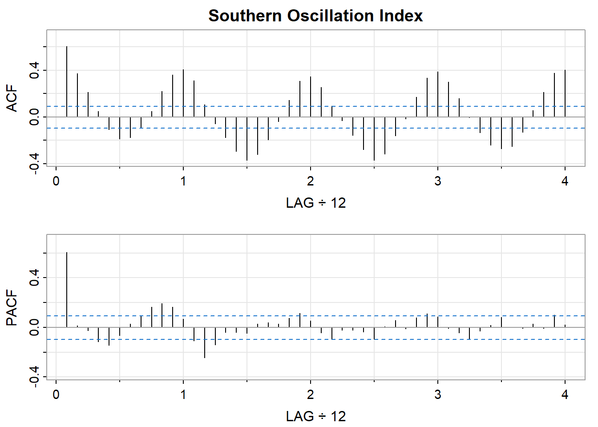
The acf2() function from the astsa package displays both functions together. For SOI:
The shapes of the ACF and PACF suggest what type of model might be appropriate. The following table summarizes the classic patterns:
| Model | ACF Pattern | PACF Pattern |
|---|---|---|
| AR(p) | Decays gradually (exponential or oscillating) | Cuts off after lag \(p\) |
| MA(q) | Cuts off after lag \(q\) | Decays gradually |
| ARMA(p,q) | Decays gradually | Decays gradually |
| White noise | All values near zero | All values near zero |
These patterns guide the identification stage of model building, which we develop in Chapter 13. The key insight is that the ACF and PACF encode information about the process’s memory structure—how far back in time the present depends on.
The ACF has a frequency-domain counterpart: the spectral density \(f(\lambda)\). The two are related by the Fourier transform:
\[ f(\lambda) = \frac{1}{2\pi} \sum_{u=-\infty}^{\infty} \gamma(u) e^{-i\lambda u} \]
and inversely:
\[ \gamma(u) = \int_{-\pi}^{\pi} f(\lambda) e^{i\lambda u} \, d\lambda \]
The autocovariance function and spectral density contain exactly the same information, expressed in different domains. The ACF describes dependence in terms of time lags; the spectrum describes it in terms of frequency contributions to variance.
This duality means that the diagnostic patterns have spectral interpretations:
When examining a new time series, looking at both the ACF and the spectrum provides complementary views of the same underlying structure.
A common diagnostic question is whether a series (or the residuals from a fitted model) is consistent with white noise. Several approaches are available:
Visual inspection: Do the sample ACF values fall within the confidence bands? One or two exceedances at non-systematic lags may be expected by chance; systematic patterns indicate structure.
Ljung-Box test: This test aggregates information across multiple lags to test the null hypothesis that all autocorrelations up to lag \(h\) are zero:
\[ Q(h) = T(T+2) \sum_{u=1}^{h} \frac{\hat{\rho}(u)^2}{T-u} \]
Under the null of white noise, \(Q(h) \stackrel{\cdot}{\sim} \chi^2_h\). A large value (small p-value) suggests the series is not white noise.
# Ljung-Box test for SOI at lag 20
stats::Box.test(soi, lag = 20, type = "Ljung-Box")
Box-Ljung test
data: soi
X-squared = 693.28, df = 20, p-value < 2.2e-16The highly significant result confirms what the ACF already showed: SOI has substantial autocorrelation.
Spectral tests: In the frequency domain, white noise corresponds to a flat spectrum. Tests such as Bartlett’s test assess whether the periodogram is consistent with this null hypothesis.
The diagnostic tools we have developed are not merely descriptive. Autocorrelation has direct consequences for statistical inference. Ignoring it leads to incorrect variance estimates, misleading confidence intervals, and invalid hypothesis tests. Understanding these consequences—and how to address them—is essential for drawing reliable conclusions from time series data.
Consider a basic inferential task: estimating the mean \(\mu\) of a stationary process \(\{X(t)\}\) from \(T\) observations \(X(1), \ldots, X(T)\). The natural estimator is the sample mean:
\[ \bar{X} = \frac{1}{T} \sum_{t=1}^{T} X(t) \]
If the observations were independent, the variance of the sample mean would be the familiar:
\[ \text{Var}(\bar{X}) = \frac{\sigma^2}{T} \]
where \(\sigma^2 = \text{Var}\{X(t)\}\). This formula underlies standard confidence intervals and hypothesis tests.
But if the observations are autocorrelated, this formula is wrong. The correct variance is:
\[ \text{Var}(\bar{X}) = \frac{\sigma^2}{T} \left( 1 + 2 \sum_{u=1}^{T-1} \left(1 - \frac{u}{T}\right) \rho(u) \right) \]
The term in parentheses is the variance inflation factor. When autocorrelations are positive (as is typical—high values tend to follow high values), this factor exceeds 1, and the true variance of \(\bar{X}\) is larger than the naive formula suggests.
To see this concretely, consider the moving average process of order 1:
\[ X(t) = W(t) + \theta \, W(t-1) \]
where \(\{W(t)\}\) is white noise with variance \(\sigma_W^2\), and \(\theta\) is a parameter with \(|\theta| < 1\).
This process has a simple autocorrelation structure:
\[ \rho(u) = \begin{cases} 1 & \text{if } u = 0 \\[4pt] \dfrac{\theta}{1 + \theta^2} & \text{if } u = \pm 1 \\[4pt] 0 & \text{if } |u| > 1 \end{cases} \]
The process has memory only at lag 1; observations more than one time unit apart are uncorrelated.
Even this limited dependence affects the variance of the sample mean. For large \(T\), the variance of \(\bar{X}\) is approximately:
\[ \text{Var}(\bar{X}) \approx \frac{\sigma_X^2}{T} \cdot \frac{(1 + \theta)^2}{1 + \theta^2} \]
When \(\theta > 0\), the factor \((1 + \theta)^2 / (1 + \theta^2)\) exceeds 1. For example, if \(\theta = 0.5\):
\[ \frac{(1 + 0.5)^2}{1 + 0.25} = \frac{2.25}{1.25} = 1.8 \]
The variance is 80% larger than the naive formula predicts. Confidence intervals based on the naive variance would be too narrow; hypothesis tests would reject too often.
The effective sample size (ESS) provides an intuitive way to quantify the impact of autocorrelation. It answers the question: how many independent observations would give the same variance for \(\bar{X}\)?
Define \(N_{\text{eff}}\) such that:
\[ \frac{\sigma^2}{N_{\text{eff}}} = \text{Var}(\bar{X}) \]
Solving:
\[ N_{\text{eff}} = \frac{T}{1 + 2 \sum_{u=1}^{T-1} \left(1 - \frac{u}{T}\right) \rho(u)} \]
For large \(T\), if the autocorrelations are summable, this simplifies to:
\[ N_{\text{eff}} \approx \frac{T}{1 + 2 \sum_{u=1}^{\infty} \rho(u)} \]
The effective sample size tells you how much information your data actually contain about the mean—accounting for the redundancy introduced by dependence.
For an AR(1) process \(X(t) = \phi X(t-1) + W(t)\) with \(|\phi| < 1\), the autocorrelation function is \(\rho(u) = \phi^{|u|}\). The sum of autocorrelations is:
\[ \sum_{u=1}^{\infty} \rho(u) = \sum_{u=1}^{\infty} \phi^u = \frac{\phi}{1 - \phi} \]
Thus:
\[ N_{\text{eff}} \approx T \cdot \frac{1 - \phi}{1 + \phi} \]
Consider \(\phi = 0.8\) (moderately strong positive autocorrelation):
\[ N_{\text{eff}} \approx T \cdot \frac{0.2}{1.8} = T \cdot 0.111 \approx \frac{T}{9} \]
A sample of \(T = 100\) observations has an effective sample size of only about 11. The data contain far less information than the nominal sample size suggests.
phi_seq <- seq(-0.9, 0.9, by = 0.01)
ess_ratio <- (1 - phi_seq) / (1 + phi_seq)
plot(phi_seq, ess_ratio, type = "l", col = 4, lwd = 2,
xlab = expression(phi), ylab = expression(N[eff] / T),
main = "ESS Ratio for AR(1) Process")
abline(h = 1, lty = 2, col = "gray")
abline(v = 0, lty = 2, col = "gray")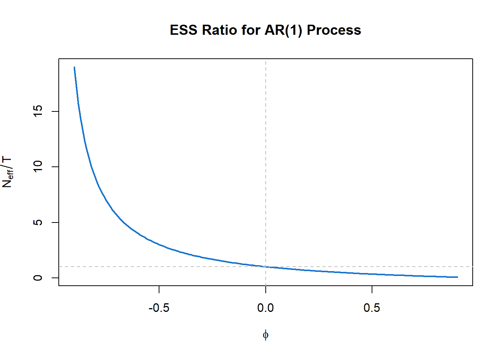
The figure shows how \(N_{\text{eff}}/T\) varies with the AR(1) parameter \(\phi\). For positive autocorrelation (\(\phi > 0\)), the effective sample size is less than \(T\)—sometimes dramatically so. For negative autocorrelation (\(\phi < 0\)), the effective sample size can exceed \(T\), as successive observations provide more information than independent ones would.
The implications for applied work are substantial:
| If you ignore autocorrelation… | Consequence |
|---|---|
| Confidence intervals | Too narrow—you understate uncertainty |
| Hypothesis tests | Too many false positives—you find “significance” that isn’t real |
| Standard errors | Underestimated—your precision is illusory |
| Cross-validation | Training and test sets are not independent—performance estimates are biased |
| Regression inference | Coefficient standard errors are wrong if residuals are autocorrelated |
These are not minor technicalities. In fields where time series data are common—economics, climate science, epidemiology, finance—failure to account for autocorrelation can lead to overconfident conclusions and spurious findings.
Several approaches address the variance problem:
Use autocorrelation-robust standard errors: Methods such as Newey-West or HAC (heteroskedasticity and autocorrelation consistent) standard errors adjust for dependence without requiring a full time series model.
Model the autocorrelation explicitly: Fit an ARIMA or other time series model that captures the dependence structure. Inference based on a correctly specified model will have appropriate standard errors.
Use the ESS() function: The astsa package provides a function to estimate effective sample size directly:
# Estimate ESS for global temperature data
astsa::ESS(gtemp_land)[1] 45.91This returns an estimate of how many independent observations the series is “worth” for estimating the mean.
Bootstrap: Resampling methods that preserve the dependence structure (fixed block length, random start-time, for example) can provide valid inference without parametric assumptions.
The effective sample size concept illustrates a broader principle: understanding the data-generating process is essential for valid inference. Autocorrelation is not just a diagnostic curiosity—it reflects how the system works. Successive observations are similar because the underlying process has memory, because today’s value influences tomorrow’s, because the system evolves continuously rather than jumping randomly.
This understanding—of why the data behave as they do—is what allows us to draw correct conclusions. A confidence interval that ignores autocorrelation is not just technically wrong; it reflects a misunderstanding of the data. Getting the inference right requires getting the structure right.
This is another manifestation of the dual aims we have emphasized throughout: decision support (getting valid confidence intervals) rests on scientific understanding (recognizing and modeling the dependence structure).
This chapter has introduced the conceptual and diagnostic foundations for time series analysis. We have seen that time series data have memory—successive observations are dependent—and that this dependence can be characterized equivalently in the time domain (through the autocorrelation function) or the frequency domain (through the spectral density). These two perspectives illuminate different aspects of the same underlying structure: the ACF tells us how the past predicts the future; the spectrum tells us what periodic components are present.
We have also seen that ignoring dependence leads to incorrect inference. The effective sample size quantifies how much less information autocorrelated data contain than independent observations would. Valid conclusions require understanding and modeling the dependence structure.
The subsequent chapters develop the tools for this modeling.
Chapter 13 develops autoregressive integrated moving average (ARIMA) models, the workhorses of time series forecasting. These models express the current value as a linear combination of past values and past errors:
The ACF and PACF patterns we examined in this chapter guide model identification: which lags matter? how much memory does the process have? Chapter 13 shows how to translate these diagnostic insights into fitted models and forecasts.
The emphasis in time domain methods is prediction: given the past, what should we expect in the future? This is the decision-support perspective on time series—using the dependence structure to extrapolate patterns forward.
Chapter 14 develops spectral analysis, the systematic decomposition of a time series into frequency components. The key tools are:
We saw hints of these tools in this chapter’s examples: the spectrum revealed the 11-year solar cycle in sunspots, the low-frequency dominance in global temperatures, and the multiple periodicities in the Southern Oscillation. Chapter 14 develops the estimation theory and interpretation in depth.
The emphasis in frequency domain methods is understanding: what periodic structures drive the process? what filtering has shaped the observed series? This is the scientific-understanding perspective on time series—using the spectral decomposition to identify the mechanisms at work.
The two chapters correspond to the two perspectives we have maintained throughout, but they are not alternatives. Complete understanding of a time series often requires both:
A forecast that ignores underlying periodicity may miss predictable cycles. A spectral analysis that ignores the forecasting context may identify periodicities without asking whether they help predict future values. The most effective analyses move fluidly between perspectives, using each where it provides insight.
This duality reflects the deeper theme of this book: understanding and decision support are intertwined. We forecast better when we understand the mechanisms; we understand more deeply when our models predict successfully. Time series analysis, with its mathematical duality between time and frequency domains, makes this interplay especially vivid.
Time series have memory: Successive observations are dependent, not independent. This dependence is information about how the system evolves.
Two equivalent descriptions: The autocovariance function (time domain) and spectral density (frequency domain) contain the same information, expressed differently. They are Fourier transform pairs.
Fourier analysis is fundamental: Complex exponentials are eigenfunctions of the time-shift operator. This deep fact explains why frequency decomposition is natural for stationary processes.
White noise is the baseline: Zero autocorrelation at all nonzero lags; flat spectrum. Departures from this baseline reveal structure.
Stationarity enables estimation: When statistical properties don’t change over time, we can estimate the ACF and spectrum from a single realization. Stationarity is the statistical counterpart of time-invariance.
ACF and PACF are diagnostic tools: Their patterns reveal the dependence structure and guide model selection.
Ignoring autocorrelation invalidates inference: The effective sample size is often much smaller than the nominal sample size. Valid confidence intervals require accounting for dependence.
Understanding and prediction are intertwined: Time domain methods emphasize forecasting (decision support); frequency domain methods emphasize identifying structure (scientific understanding). Both are needed for complete analysis.
Exploring the astsa datasets: Choose a time series from the astsa package not discussed in this chapter (e.g., nyse, cpg, gas, oil, prodn). Plot the series, its ACF, and its spectrum. What features do you observe? Does the series appear stationary? What does each diagnostic reveal?
Stationarity assessment: For the global temperature series gtemp_land, apply first differencing to obtain the year-over-year changes. Plot the differenced series, its ACF, and its spectrum. How do these compare to the original series? Has differencing achieved stationarity?
Effective sample size: Using the formula for an AR(1) process, calculate the effective sample size for \(T = 200\) observations when \(\phi = 0.5\), \(\phi = 0.8\), and \(\phi = 0.95\). What happens as \(\phi\) approaches 1?
Comparing domains: For the SOI data, we observed spectral peaks at the annual frequency and the El Niño frequency (~4 years). Examine the ACF carefully. Can you identify features corresponding to these two periodicities? Why is the spectrum clearer for this purpose?
Simulating white noise: Generate 500 observations of Gaussian white noise using rnorm(). Plot the series, ACF, and spectrum. How do these compare to the theoretical signatures described in the chapter? Repeat several times—how much variation do you see in the sample ACF and spectrum?
The MA(1) variance inflation: For an MA(1) process with \(\theta = 0.8\), calculate the variance inflation factor \((1 + \theta)^2 / (1 + \theta^2)\). If you have \(T = 50\) observations, what is the approximate effective sample size? How would your confidence interval for the mean differ from the naive interval that ignores autocorrelation?
Textbooks:
Shumway, R.H. and Stoffer, D.S. (2025). Time Series Analysis and Its Applications: With R Examples (5th ed.). Springer. The primary reference for this and subsequent chapters, with extensive R code.
Brockwell, P.J. and Davis, R.A. (2016). Introduction to Time Series and Forecasting (3rd ed.). Springer. A more mathematically rigorous treatment.
Brillinger, D.R. (2001). Time Series: Data Analysis and Theory. SIAM. A classic with strong coverage of frequency domain methods.
Software:
The astsa package for R provides the datasets and functions used throughout these chapters. See the package vignette “Fun with astsa” for an introduction.
The CRAN Task View on Time Series (https://cran.r-project.org/web/views/TimeSeries.html) provides a comprehensive listing of R packages for time series analysis.
Online resources:
Source: NOAA National Centers for Environmental Information. NOAA uses the term “anomaly” rather than “deviation.”↩︎